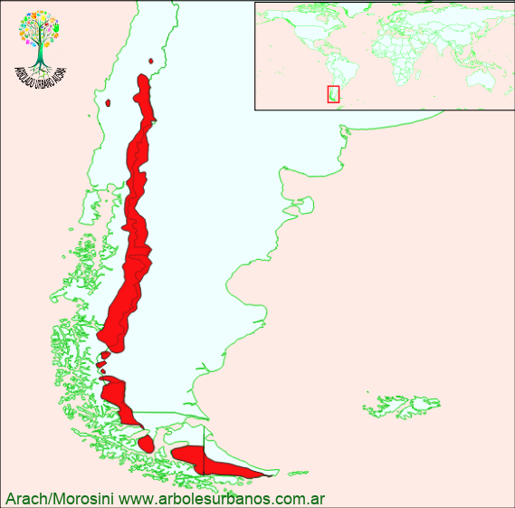

Click en las imágenes para ampliar

{kind=link}
{kind=link}
{kind=link}
{kind=link}
{kind=link}
{kind=link}
{kind=link}
Lenga
NOMBRE CIENTÍFICO: Nothofagus pumilio
FAMILIA BOTÁNICA: Fagáceas
DESCRIPCIÓN GENERAL: Árbol de gran porte que puede alcanzar los 35 metros de altura y los 2 metros de diámetro a la altura del pecho. Copa globosa, la disposición de sus ramas le dan una aspecto estratificado. La corteza joven es fina, lisa y de color gris claro, volviéndose gruesa gris y agrietada longitudinalmente cuando madura.
HOJAS: Las hojas son, caducas, simples, aovadas miden entre 2 a 5 cm. de largo, el borde es crenado y presenta una escotadura internerval. Se presentan de color verde oscuro pueden ser glabras o pubescentes, en otoño se vuelven rojizas.
FLORES: Las flores masculinas y femeninas se encuentran en el mismo ejemplar. Son pequeñas, y aparecen a finales de la primavera, en las axilas foliares.
FRUTOS: Aquenio dehiscentes, que contienen 3 pequeñas semillas, bialadas.
ORIGEN: Su área de distribución natural es Argentina y Chile. En Argentina se lo encuentra desde el norte de la provincia de Neuquén hasta Tierra del Fuego.
USOS: La madera tiene su albura de color blanco amarillento y rosado su duramen, semidura, es utilizada en construcciones y mueblería. Desde el punto de vista ornamental, tiene mucho potencial, debido principalmente a su follaje otoñal
REPRODUCCIÓN: Se multiplica mediante semillas que son de baja viabilidad
PARTICULARIDADES: Esta especie es la que ocupa junto con el Ñire, la parte más alta del bosque, donde se la encuentra en forma achaparrada. El limite altitudinal en la zona de 1800 msnm. mientras que en Tierra del Fuego es de menos de 700 msnm.